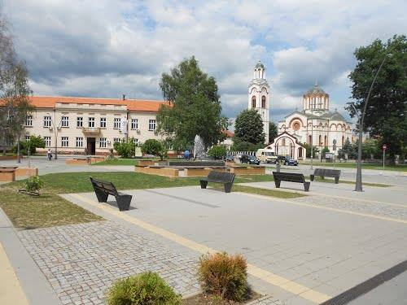
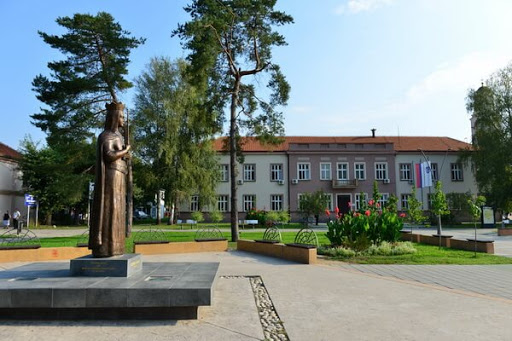
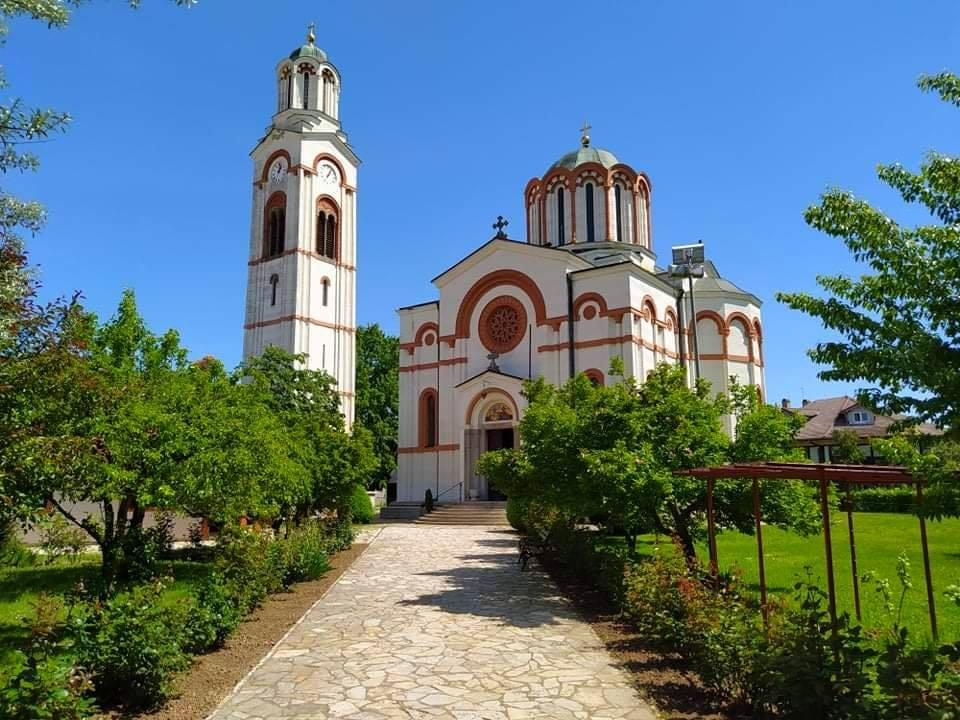
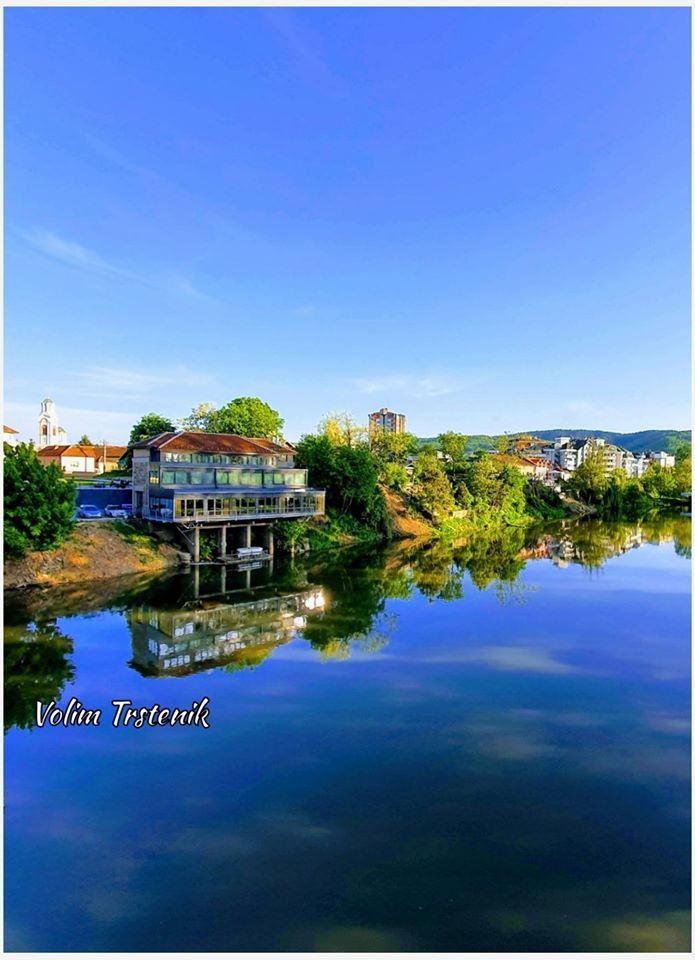

O meni
Moje ime je Tamara Luković, rođena sam u Kruševcu 12.07.2000. godine. Osnovnu školu ‚‚Jovan Jovanović Zmaj", završila sam sa odličnim uspehom i bila vukovac,
u rodnom
mestu - Stopanji. Srednju školu Gimnazija
‚‚Vuk Karadžić" završila sam u Trsteniku. Pored toga završila sam i srednju muzičku školu ‚‚Kornelije Stanković" odsek za klavir,
takođe u Trsteniku. Trenutno studiram na
Fakultetu tehničkih nauka u Čačku, smer ‚‚Informacione tehnologije".
U trajanju obrazovanja pre fakulteta učestvovala sam na raznim
takmičenjima, bilo da se radi o nastavnim ili van nastavnim aktivnostima, na kojima sam bila uspešna
i ostvarila mnogobrojne rezultate kao i nagrade.
Sport
Sportom se bavim od malih nogu. Već od drugog razreda osnovne škole sam trenirala odbojku i uporedo
igrala folklor, a kasnije sa trenirala košarku. Pored toga učestvovala sam na
školskim takmičenjima iz rukometa i fudbala. Sport me
jako ispunjava i kroz sport sam naučila mnogo bitnih životnih lekcija. Odbojka mi je omiljeni sport kojim se bavim i danas.
Volim broj
2 od malena, pre svega sam se ugledala na svoju sestru, koja je takođe nosila 2, a kasnije mi je uzor postala i Jovana Brakočević. Od svih
sportova ovde sam se najviše
pronašla i mogu reći da sam jako dobra u tome. Uvek dajem svoj maksimum šta god da radim i trudim se
da iz dana u dan napredujem i budem sve bolja.
Hobi


Pored sporta, ispunjavaju me još mnoge stvari. Pre svega, s obzirom da sam
završila nižu muzičku, obožavam da sviram i to je prva stvar na listi koju radim u slobodno vreme.
Takođe volim da čitam knjige,
omiljeni žanr mi je romantika, ali mogu da čitam i druge. Fotografijom se takođe bavim u slobodno vreme, kada sam u prirodi volim da
zabeležim
sve što mi se učini interesantno u tom momentu. San mi je da proputujem ceo svet, pa je to takođe još jedan od hobija. Volim
da posećujem nova mesta i da saznam
nešto zanimljivo u vezi njih.
Ciljevi
Najveća životna želja mi je oduvek bila da proputujem ceo svet. To za sobom vuče
druge ciljeve, pre svega da završim fakultet, kasnije da nađem posao u struci, koji će mi na kraju
omogućiti da ostvarim svoj san. Takođe mi je jedan od
većih ciljeva, kao i svima, da osnujem porodicu i da svojoj budućoj deci stvorim dobre uslove za život. Volela bih da odem
na Filipine, Tajland, Norvešku i
Island. To su 4 zemlje koje su mi u prvom planu.
Moj grad
Trstenik je gradsko naselje u Srbiji u opštini Trstenik u Rasinskom okrugu. Smešten je na reci Zapadnoj Moravi.
Prema popisu iz 2011. bilo je 15.282 stanovnika. Trstenik se nalazi
na 43° 37′ i 21° IGD, oko 205 kilometara južno od Beograda, 115 km od Niša,
74 km od Kragujevca i 60 km od Čačka. Nadmorska visina Trstenika je 171,4 metara, a najviši
vrhovi u ovoj oblasti su Samar (922 m), najviša tačka
Gledićkih planina, Mali vrh (922 m), Pogled (736 m) i Čikar (736 m). Kroz Trstenik protiče Zapadna Morava.
Kroz Trstenik prolazi magistralni put Pojate-Kraljevo. Kroz Trstenik prolazi železnička pruga Stalać-Požega.
Ovde se nalaze Zapis hrast kod crkve (Trstenik) i Zapis hrast na trgu (Trstenik).
U samom centru se nalazi crkva Svete Trojice, a ispred opštine je pre par godina postavljena statua
Knjeginje Milice.
Više o gradu Trsteniku možete saznati na sajtu vikipedije - Trstenik, ili možete pratiti dešavanja na fejsbuk stranici Volim Trstenik.
  